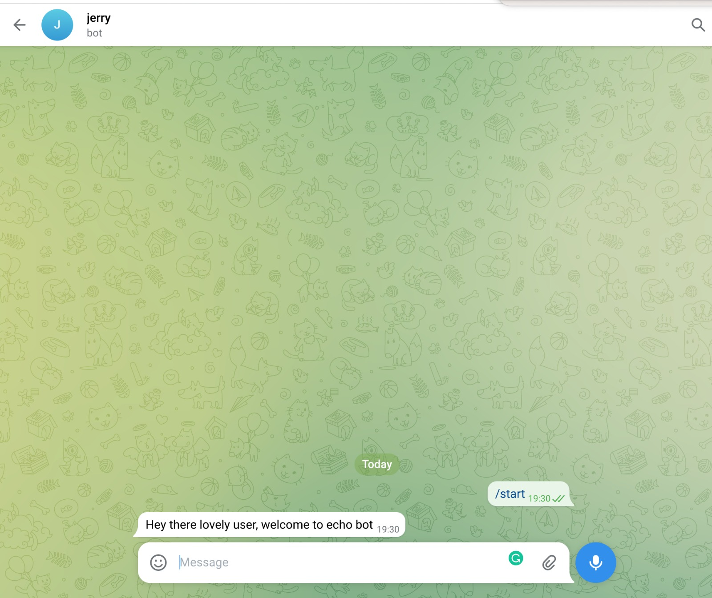

Getting started
Your first bot
Autotelegram cares about developer productivity, and that's why it tries to abstract the tedious and laborious complex code needed to develop telegram bots and provides you with a nice and clean API to help you to quickly spin-up a telegram bot within minutes.
You wanna see how it works? let's get started by building a simple echo bot. With the previous API, we had to do a lot of manual work using the context API. If you still want to use the context API, it's availabe for you. But the new API builds on top of the context API to give you a nice interface to build a bot.
Before we can proceed building our bot, we need to create a bot in telegram and get our token. To get one, we need to create a bot with telegram's bot father. You can get detailed instruction on how to do that here
Now that we have our token. Let me show you how easy it is to create a bot with autotelegram.
First, we need to import the Context and PollingApp classes and then write an async function we shall
pass to the PollingApp run method to process every incoming update. Here's how.
from autotelegram.telegram.context import Context
from autotelegram.telegram.application import PollingApp
TOKEN = "token-for-the-bot"
ctx = Context(TOKEN)
app = PollingApp(ctx)
async def echo (update,ctx):
message = update.message
text = message.text
await message.respond_with_text(text)
if __name__ == "__main__":
app.run(echo)
Context class, passing in the bot token.
- We create an instance of our PollingApp class and pass in the context instance.
- And write our echo async function which shall respond back to every message with the same text that was sent to it.
- We call the run function of the app with the echo async function. And there you have it, a fully functional bot with few lines of code.
Adding command handlers
We can add extra features to our bot to make it more useful. Telegram has a concept of commands.
These are one word instructions we can pass our bot to handle some tasks.
By default, telegram sends us a /start command whenever a user is interacting with our
bot for the first time. To handle such command, the App class provides us with ability to
write command handlers using the add_commandhandler decorator. Let's extend our
echo example above to include a command handler that responds to the /start command to
welcome our new user before starting to echo. Let's go.
from autotelegram.telegram.context import Context
from autotelegram.telegram.application import PollingApp
TOKEN = "token-for-the-bot"
ctx:Context = Context(TOKEN)
app = PollingApp(ctx)
@app.add_commandhandler("/start")
async def start_handler (message,context):
welcome_message = "Hey there lovely user, welcome to echo bot"
await message.respond_with_text(welcome_message)
async def echo (update,ctx):
message = update.message
text = message.text
await message.respond_with_text(text)
if __name__ == "__main__":
app.run(echo)
start_handler command handler function. This will be called every time
a new user starts a conversation with our bot.

Further
This section was added to give a sneak-peek into how easy it is to build telegram bots with autotelegram. To explore further, check out the rest of the documentation.